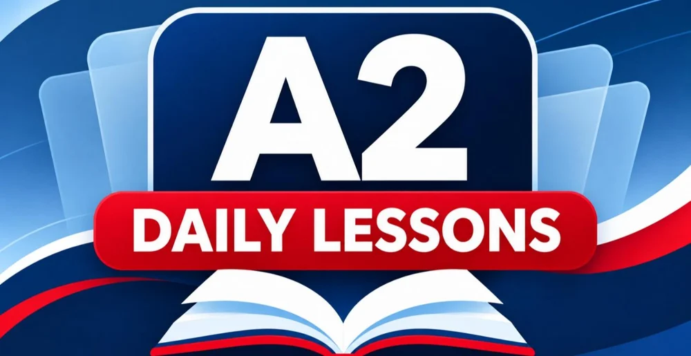
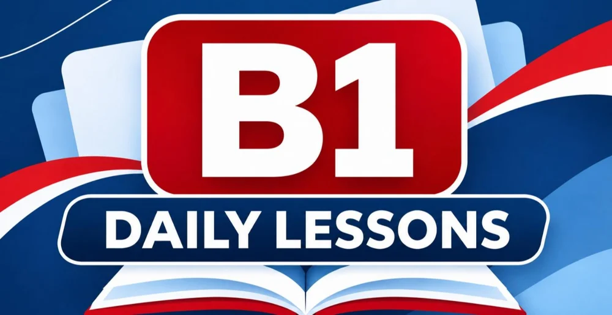

Find your starting point
Take the free assessment for an indicative level, or tell us the level you already know.
A clear path for learners. Fresh inspiration for teachers. Discover daily English lessons designed around your CEFR level.
A2–C2 levels • Up to 22 new lessons a month
English that connects to your world.
Less time wondering what to study.
More time engaging with English.
Take the free assessment for an indicative level, or tell us the level you already know.
Explore reading, vocabulary and practical activities matched to your level, from A2 to C2.
Join the beta waitlist. When your cohort is ready, receive an invitation to the relevant Didaktika Academy course.
A planned rhythm of up to 22 new lessons each month, with language and activities tailored to your level.
Beta availability and archive access will be confirmed with your invitation.


Move from a first thought to new vocabulary, a short reading and a conversation worth having.
Illustrative B1 lesson preview.
Lesson activities may vary.
Complete the assessment in Google Forms in a new tab and note your result.
Then return here to select your level for the beta waitlist.
We’re building Didaktika with the people who will use it. Teachers and learners are invited to register their interest in the pilot.
Receive an invitation when a suitable beta cohort is ready.
Tell us what makes lessons useful, engaging and easier to use.
Get beta updates about Academy and selected Lab experiments.
Tell us a little about yourself. We’ll let you know when the right cohort opens.
English learners looking for level-matched practice, and teachers looking for fresh lesson inspiration. The beta will help us refine both experiences.
No. You can join the waitlist with a known or estimated level, or choose “I’m not sure yet”. The assessment is intended to suggest a starting point, not certify proficiency.
The planned format combines pre-reading, vocabulary, reading, true/false, correct-the-mistake, discussion and quiz activities. The mix will vary by lesson and level.
The planned model keeps the current month’s lessons available separately and moves earlier lessons into an archive. Archive access and beta terms will be explained before you join a cohort.
Not to register your interest. Didaktika Academy is planned around Skool. If your beta cohort uses it, your invitation will include account and course access instructions.
Dates, cohort sizes and any pricing are not confirmed yet. We’ll share these details before you decide to participate. Joining the waitlist is free.
Lab is the home for assessment, AI tools, quizzes and experimental features. Features will be introduced as they become ready; they are not all included in this landing-page preview.